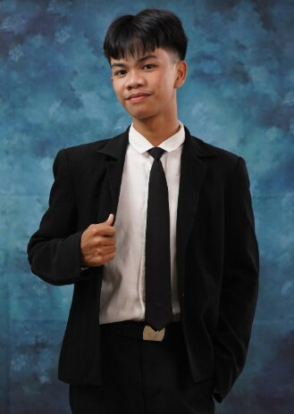

![]()
Hello!
Welcome to my personal page! I am excited to share a snippet of my life, goals, and web creation journey with you.

Credit: Taken by OcampoNHS.
Bonjour! You can call me Marfredo. I am currently a first-year student pursuing a degree in BS Computer Science at Bicol University.
I am the type of person who is always striving for more, goal-oriented,
embracing flaws, and set high expectations for myself, not because I wanted to be perfect, but because I
know I am capable of achieving more.
You can scroll down below or tap the navigation buttons if you want to know more interesting stuffs
about myself.
About Me
Credit: GIPHY
I love watching movies, specifically in the realism genre. I am a fan of Filipino Movies, especially Indie Films because they tackle a lot of social issues here in the Philippines such as politics, sexism, stereotypes, and more. Aside from that, growing up, I have always been an academic-minded person. I love studying, especially Mathematics and Social Sciences. I was also a campus journalist back in my high school years—advocating political awareness, environmental crisis awareness, and spreading societal knowledge to people who don't have access to factual information.
On a typical day, I am still just a person figuring things out. I remain curious, yet somewhat frightened by what the world has in store for me. However, I believe that everything happens for a reason. I also believe that every action we take comes with the responsibility to acknowledge and accept its consequences. I understand that life will not always go according to plan, but I see every challenge, mistake, and experience as an opportunity to learn and grow. After all, I am still a work in progress, learning to navigate life one step at a time while holding on to my dreams, values, and the belief that there is always something more to discover.
Hobbies & Passions
- Dancing: I love doing it since elementary, genres such as hip-hop, contemporary, and street dance are my fav.
- Watching Indie & Realism Films: Exploring stories that highlight real societal issues and human experiences.
- Campus Journalism & Writing: It has been my passion writing articles and documentaries that raises awareness on political and environmental issues.
- Playing Online Games: Mobile Legends and Plants Vs. Zombies are my favorite games, I play it during my free time.
- Writing and reading Novels: Aside from journalism, I also have interests in writing and reading stories, genres such as horror, psychological thriller, and romcoms are my favs.
My path into computing
To be honest, CompSci wasn't really the plan, well it was one of my choices, but not the top 1. My heart
has always been Law.
But, choosing a pre-law degree such as philosophy, political science, psychology, and other more degree
was not practical for me.
I needed to be practical. That's why I chose a program that is practical and fits my other interest and
skills.
Since I love Math, I chose Computer Science. I believe that my strengths and skills will be honed in this
program
and help me reach my dream profession in tech and law someday. As a beginner, I hope to learn more about
programming, software development,
and gaining meaningful experience in the computing field.
As I continue my journey in Computer Science, I look forward to exploring new technologies, working on collaborative projects, and improving my problem-solving skills to build useful software solutions.
My interest in computing started when I realized how technology powers the modern tools and platforms we interact with daily. I chose BS Computer Science because I wanted to understand the logic behind software development and use these skills to solve real-world problems. Building projects step-by-step gives me both a creative outlet and a strong foundation for my long-term career aspirations.